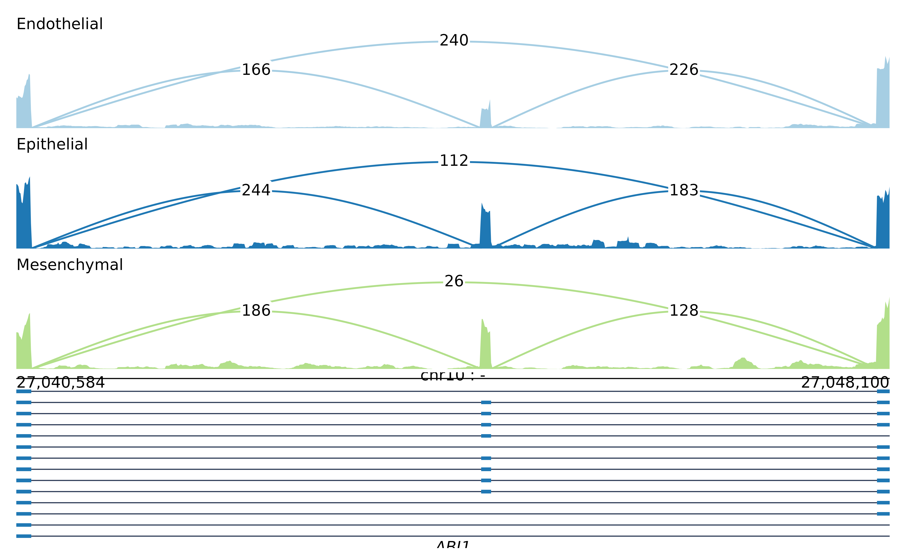

Reads one or more BAM/CRAM files over a region and returns a
sashimi_data() object holding binned coverage and spliced-junction counts.
This is the main entry point when starting from alignments.
Usage
sashimi_from_bam(
bam,
region,
annotation = NULL,
bin = NULL,
n_bins = 800,
group_col = NULL,
label_col = NULL,
strand = "none",
keep_strand = "both",
min_count = 1,
min_mapq = 0,
flags = NULL,
per_sample = TRUE,
gene = NULL,
flank = 0,
junction_overlap = c("within", "any")
)Arguments
- bam
A path to a BAM/CRAM/SAM file, a vector of paths, or a manifest read by
read_manifest()(a path to a TSV works directly). A.samfile is converted to a sorted, indexed BAM in the session's temporary directory the first time it is read, which is whatrmats2sashimiplotdoes for its--s1/--s2inputs.- region
A region string such as
"chr10:27035000-27050000", aparse_region()object, or a data frame of regions with columnschrom,start,endand optionallyname.- annotation
Optional GTF/GFF3 path, or the result of
read_annotation(), used to draw transcript models under the tracks.- bin
Bin width in base pairs.
1gives per-base coverage, which is exact but slow to draw over a wide window; the default ofNULLpicks a bin that gives roughlyn_binspoints.- n_bins
Target number of bins when
binisNULL.- group_col, label_col
Manifest columns used for grouping and panel labels; see
read_manifest().- strand
Strand specificity, see
strand_modes().- keep_strand
Which strand to keep once reads are assigned:
"both","+"or"-". Only meaningful whenstrandis not"none".- min_count
Drop junctions with fewer supporting reads.
- min_mapq
Ignore alignments below this mapping quality.
- flags
A
Rsamtools::scanBamFlag()value. The default drops unmapped reads, secondary alignments, duplicates and QC failures.- per_sample
Keep one track per sample. When
FALSE, samples sharing a group are summed as they are read, which is cheaper in memory.- gene
Restrict
annotationto this gene name.- flank
Widen the region by this many base pairs on each side.
- junction_overlap
Which junctions to keep:
"within"(the default) keeps only junctions whose donor and acceptor both fall inside the region,"any"also keeps those with one end beyond it, whose arcs then run off the edge of the panel.
Details
Coverage is the depth of reference-consuming CIGAR operations (M, D,
=, X), binned to bin base pairs by taking the mean depth within each
bin. Junctions are N operations, counted once per read and keyed by their
donor and acceptor coordinates; a junction supported by fewer than
min_count reads is dropped.
For a stranded library, set strand so that reads are assigned to the
correct strand, and keep_strand to draw only one of them. For an
unstranded library leave strand = "none" and everything is pooled.
Examples
bams <- system.file("extdata", "samples.tsv", package = "omakase")
gtf <- system.file("extdata", "annotation.gtf", package = "omakase")
if (nzchar(bams)) {
sd <- sashimi_from_bam(bams, "chr10:27040584-27048100", annotation = gtf,
min_count = 10)
plot_sashimi(sd, aggregate = "mean")
}
